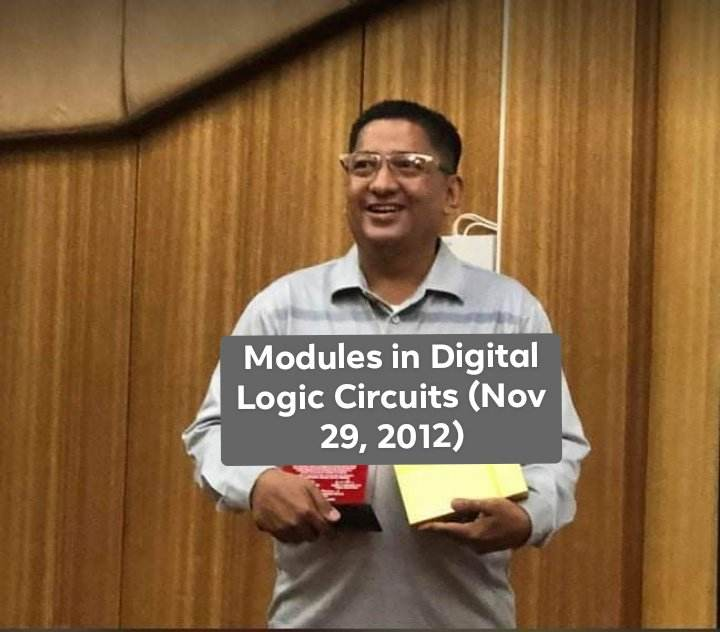
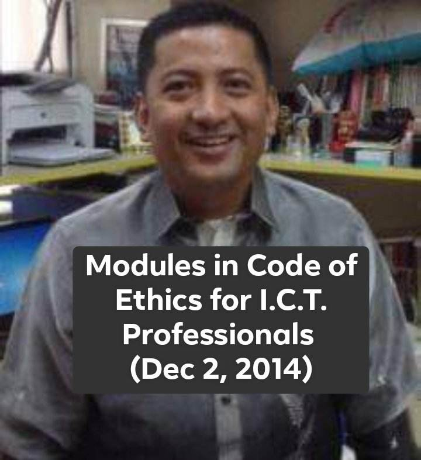
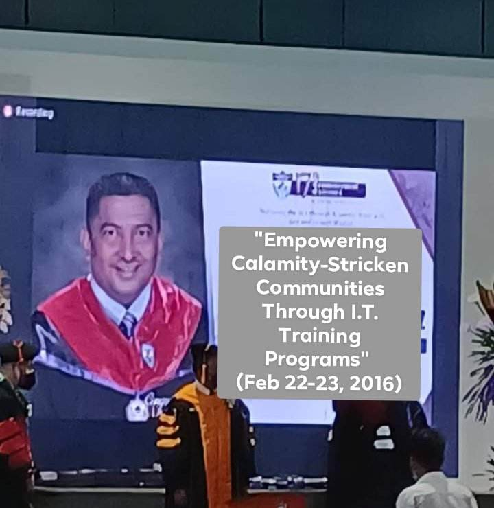
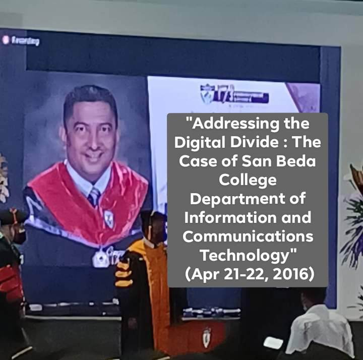

Books Authored:
Basic Computer Concepts (2012)

Word Processing(Using MS-Word 2007)(2012)

Modules in Research Project (Aug 17, 2012)

Modules in Electronic Spreadsheet (Using MS-Excel 2007 (Sep 6, 2012)

Modules in Presentation and Database Software (Using MS-PowerPoint 2007 and MS-Access 2007) (Sep 6, 2012)

Modules in Fundamentals of Programming with Database Theory and Applications(Using C++) (Nov 29, 2012)

Modules in Digital Logic Circuits (Nov 29, 2012)

Modules in Code of Ethics for I.C.T. Professionals (Dec 2, 2014)

Researches:
"Empowering Calamity-Stricken Communities Through I.T. Training Programs" (Feb 22-23, 2016)

"Addressing the Digital Divide : The Case of San Beda College Department of Information and Communications Technology" (Apr 21-22, 2016)
